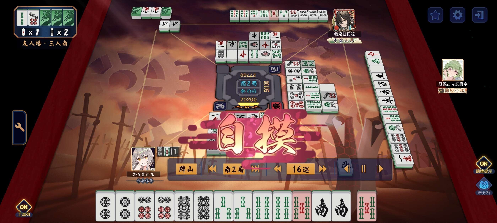

Culture Log
Music
I started playing the violin when I was 9. I am not professional. I stopped taking formal lessons in 2025, but I continue to enjoy playing and learning from books like The Basics. I was a member of the orchestras at 民權國小, 介壽國中, 師大附中(HSNU), and 交通大學(NYCU).
Music Pieces Played
2025 and Before
- J.S. Bach: Partita for Violin Solo No. 2 in D minor, BWV 1004
- J.S. Bach: Concerto for Two Violins in D minor, BWV 1043
- Lalo: Symphonie Espagnole in D minor, Op. 21, 1st
- Mendelssohn: Violin Concerto in E minor, Op. 64
- Saint-Saëns: Violin Concerto No. 3 in B minor, Op. 61
- Wieniawski: Violin Concerto No. 2 in D minor, Op. 22, 3rd
- Wieniawski: Polonaise de Concert No. 1 in D Major, Op. 4
Still Practicing
- Tchaikovsky: Violin Concerto in D major, Op. 35, 3rd
- Sibelius: Violin Concerto in D minor, Op. 47, 1rd
Playlists of Modern Music
The modern fast-paced society leaves me little time to appreciate classical music. These the link are my two playlists of modern music on YouTube Music.
Reading
The Books I Have Read
2026
- Play Winning Chess by Yasser Seirawan
- The Giver by Lois Lowry
- The Ideas Behind the Chess Openings by Reuben Fine
- 《流浪者之歌》譯本 —— Hermann Hesse
- 《解憂雜貨店》譯本 —— 東野圭吾
TV Time
The Movies I Have Watched
(which are good enough for me to remember)
2024 and Before
- Breakfast at Tiffany's (1961)
- Rome Holiday (1953)
- Funny Face (1957)
- Life is Beautiful (1997)
- Midnight in Paris (2011)
- City Lights (1931)
- The Great Dictator (1940)
- The Kid (1921)
- Modern Times (1936)
2025
- La La Land (2016)
- Love Actually (2003)
- Casino Royale (2006)
- Johnny English 1-3 (2003, 2011, 2018)
- The Menu (2022)
2026
- Quantum of Solace (2008)
- Grave of the Fireflies (1988)
- Pressure (2026)
- The Odyssey (2026)
The Series I Have Watched
(which are good enough for me to watch the episodes in roll)
2025
- Wednesday season 1 (2022)
2026
- Queen's Gambit (2020)
Video Games
Minecraft
 Playing survival with the one who failed to load his shader package, 2026
Playing survival with the one who failed to load his shader package, 2026
Brawl Stars
Hitting Legendary with the one who has and the one who hasn't beat me in 1v1, 2026
Mahjong (雀魂)

Playing Mahjong with the CS guy who types at the speed of light and my high school project partner, 2025